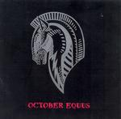

| Artist: | October Equus |
| Title: | October Equus |
| Label: | MaRaCash Records |
| Length(s): | 50 minutes |
| Year(s) of release: | 2006 |
| Month of review: | [10/2007] |
| 1) | Lupus In Fabula | 5.22 |
| 2) | Field Of Mars | 2.54 |
| 3) | Bigas | 7.46 |
| 4) | Sacrifice | 4.45 |
| 5) | Vestals | 4.19 |
| 6) | Head Of The Winner | 7.17 |
| 7) | End- On A Lance | 4.54 |
| 8) | Reliqua Tempora | 3.43 |
| 9) | Minus Nihilo | 4.49 |
Generally speaking, the music is characterized by long strands of guitar, often fuzz, at times melodic at times more strenuous and deliberate or near frippertronic, also often in an electronic guerilla range. But anyway, Pinhas is known to be heavily influenced by Fripp. These are accompanied by heavy, all pervasive organ and driving, rolling drums and bass. The organ has its moments of Jobson (late UK era), without being too obvious about it. These create something of a tantalizing sensation, which in an almost brutal way tends to envelop the listener (presuming their stereo is equipped to do so). In the fight for prevalence the guitar is favoured over the keys (aside from the organ, we also hear synths, once again heavy), with the leading role easily switching from one to the other. This throws freakensteins of jazzy persuasions out the window. Which doesn't mean they won't be knocking at the door from time to time. And then there's the combination of the constant onslaught and the whining fuzz guitar which still make for heavy listening.
As an alternative to jazzy freaking we do get some experimental bits that roughly drift in a Cuneiform type direction. Melodies that are a bit off, with strumming use of instruments. Some of the tracks are more avant prog, others more move in the direction of a jazzrocky area occupied by powertrios as well.
The band's style very much suggests an American (either North or South) heritage, but they are in fact Italian.